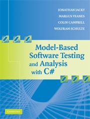

|
Jonathan Jacky University of Washington |
Margus Veanes Microsoft Research |
Colin Campbell Modeled Computation, LLC |
Wolfram Schulte Microsoft Research |

Model-based Software Testing and Analysis with C#
Jonathan Jacky, Margus Veanes, Colin Campbell, Wolfram Schulte
Cambridge University Press, 2008 (available December 2007)
This book teaches model-based analysis and model-based testing: new ways to write and analyze software specifications and designs, generate test cases, and check the results of test runs. The methods increase the automation in each of these activities, so they can be more timely, more thorough, and (we expect) more effective.
The book works through several realistic case studies in depth and detail, using a toolkit built on the C# language and the .NET framework. The systems which are tested and analyzed do not have to use C# or .NET. The book discusses principles that are independent of this particular language and framework.
This book is intended for professional software developers including testers, and for university students. It is suitable for courses on software engineering, testing, specification, or applications of formal methods. The style is accessible and the emphasis is practical, yet there is enough information to make this book a useful introduction to the underlying theory.
Publisher's web page for the book, with table of contents, index, and a sample chapter.
Chapter 1 from the publisher's web page.
The book uses the NModel analysis and testing framework. Some sample models and other code from the book are included in the NModel software release.
Here are the errors we have found in the book. Here is news about updates to NModel that were made after the book was published.